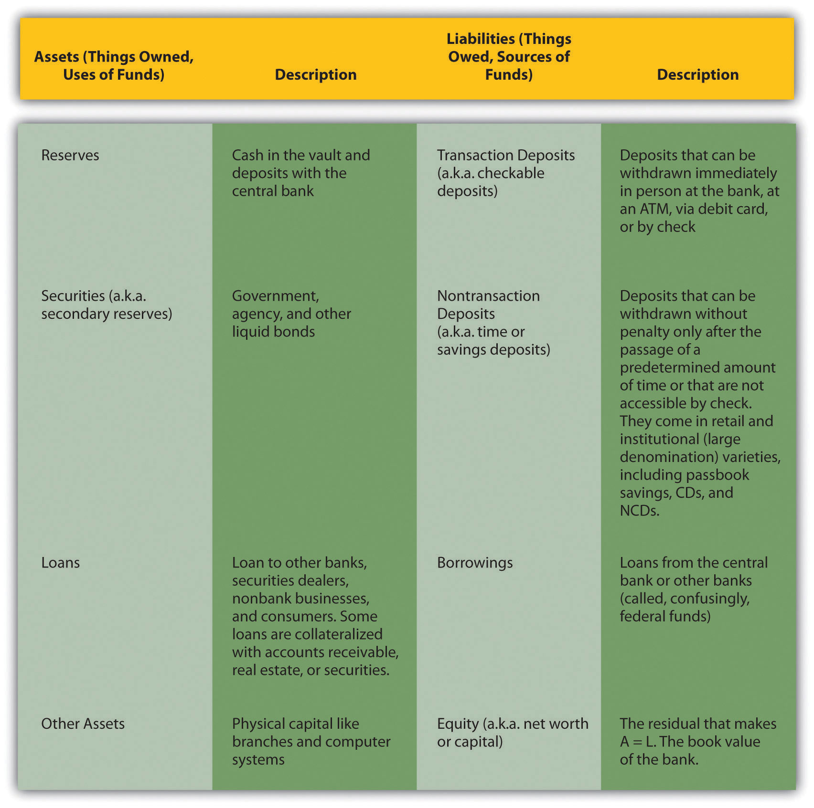
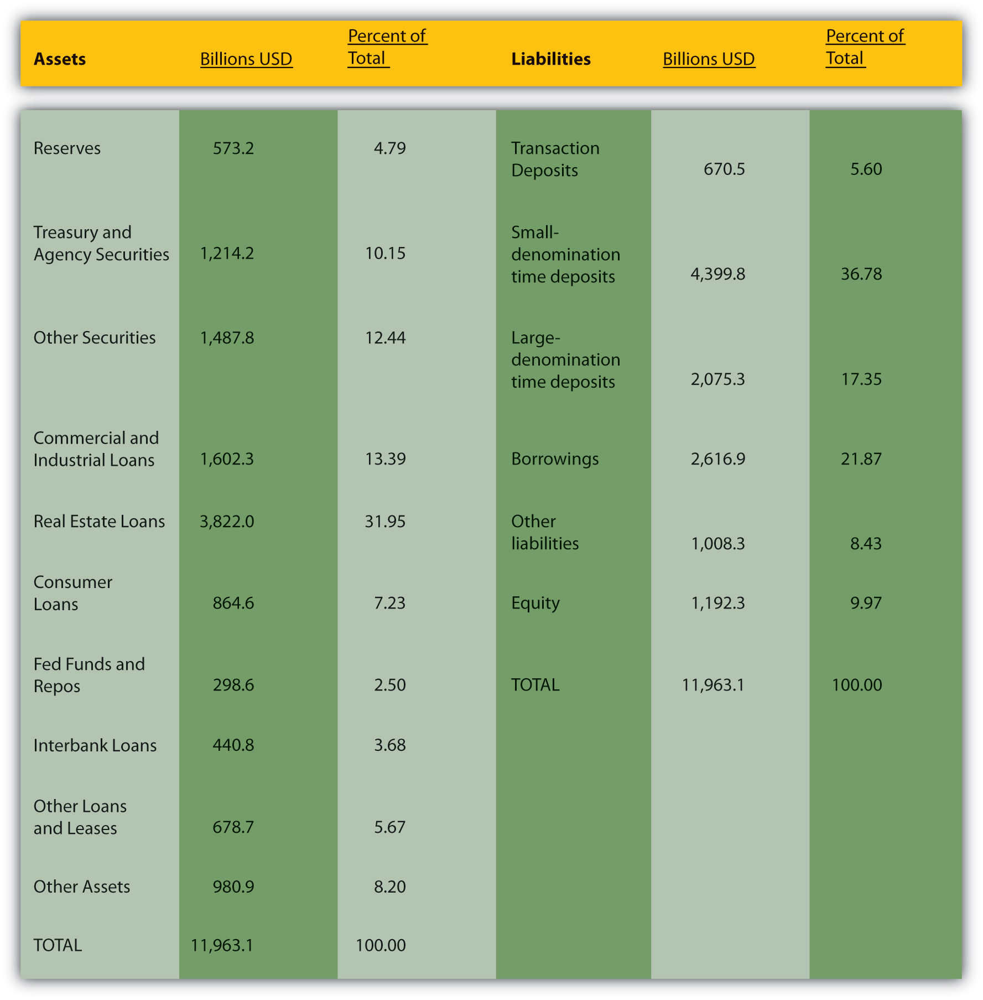

By the end of this chapter, students should be able to:
Thus far, we’ve studied financial markets and institutions from 30,000 feet. We’re finally ready to “dive down to the deck” and learn how banks and other financial intermediaries are actually managed. We start with the balance sheet, a financial statement that takes a snapshot of what a company owns (assets) and owes (liabilities) at a given moment. The key equation here is a simple one:
ASSETS (aka uses of funds) = LIABILITIES (aka sources of funds) + EQUITY (aka net worth or capital).
Liabilities are money that companies borrow in order to buy assets, which is why liabilities are sometimes called “sources of funds” and assets, “uses of funds.” The hope is that the liabilities will cost less than the assets will earn, that a bank, for example, will borrow at 2 percent and lend at 5 percent or more. The difference between the two, called the gross spread, is the most important aspect of bank profitability. (The bank’s expenses and taxes, its cost of doing business, is the other major factor in its profitability.)
The equity, net worth, or capital variable is a residual that makes the two sides of the equation balance or equal each other. This is because a company’s owners (stockholders in the case of a joint stock corporation, depositors or policyholders in the case of a mutual) are “junior” to the company’s creditors. If the company shuts down, holders of the company’s liabilities (its creditors) get paid out of the proceeds of the assets first. Anything left after the sale of the assets is then divided among the owners.
If a company is economically viable, the value of what it owns will exceed the value of what it owes. Equity, therefore, will be positive and the company will be a going concern (will continue operating). If a company is not viable, the value of what it owes will exceed what it owns. Equity, therefore, will be negative, and the company will be economically bankrupt. (This does not mean, however, that it will cease operating at that time. Regulators, stockholders, or creditors may force a shutdown well before equity becomes zero, or they may allow the company to continue operating “in the red” in the hope that its assets will increase and/or its liabilities decrease enough to return equity to positive territory.)
The value of assets and liabilities (and, hence, equity) fluctuates due to changes in interest rates and asset prices. How to account for those changes is a difficult yet crucial subject because accounting rules will affect the residual equity and perceptions of a company’s value and viability. Sometimes, it is most appropriate to account for assets according to historical cost—how much the company paid to acquire it. Other times, it is most appropriate to account for assets according to their current market value, a process called “marking to market.” Often, a blend of the two extremes makes the best sense. For instance, a bank might be allowed to hold a bond at its historical cost unless the issuer defaults or is downgraded by a rating agency.
Figure 9.1 Bank assets and liabilities
Figure 9.2 Assets and liabilities of U.S. commercial banks, March 7, 2007
Figure 9.1 "Bank assets and liabilities" lists and describes the major types of bank assets and liabilities, and Figure 9.2 "Assets and liabilities of U.S. commercial banks, March 7, 2007" shows the combined balance sheet of all U.S. commercial banks on March 7, 2007. For the most recent figures, browse www.federalreserve.gov/releases/h8/current.
In the first half of the nineteenth century, bank reservesIn this context, cash funds that bankers maintain to meet deposit outflows and other payments. in the United States consisted solely of full-bodied specie (gold or silver coins). Banks pledged to pay specie for both their notes and deposits immediately upon demand. The government did not mandate minimum reserve ratios. What level of reserves do you think those banks kept? (Higher or lower than today’s required reservesA minimum amount of cash funds that banks are required by regulators to hold.?) Why?
With some notorious exceptions known as wildcat banks, which were basically financial scams, banks kept reserves in the range of 20 to 30 percent, much higher than today’s required reserves. They did so for several reasons. First, unlike today, there was no fast, easy, cheap way for banks to borrow from the government or other banks. They occasionally did so, but getting what was needed in time was far from assured. So basically borrowing was closed to them. Banks in major cities like Boston, New York, and Philadelphia could keep secondary reservesNoncash, liquid assets, like government bonds, that bankers can quickly sell to obtain cash., but before the advent of the telegraph, banks in the hinterland could not be certain that they could sell the volume of bonds they needed to into thin local markets. In those areas, which included most banks (by number), secondary reserves were of little use. And the potential for large net outflows was higher than it is today because early bankers sometimes collected the liabilities of rival banks, then presented them all at once in the hopes of catching the other guy with inadequate specie reserves. Also, runs by depositors were much more frequent then. There was only one thing for a prudent early banker to do: keep his or her vaults brimming with coins.
As Figure 9.1 "Bank assets and liabilities" and Figure 9.2 "Assets and liabilities of U.S. commercial banks, March 7, 2007" show, commercial banks own reserves of cash and deposits with the Fed; secondary reserves of government and other liquid securities; loans to businesses, consumers, and other banks; and other assets, including buildings, computer systems, and other physical stuff. Each of those assets plays an important role in the bank’s overall business strategy. A bank’s physical assets are needed to conduct its business, whether it be a traditional brick-and-mortar bank, a full e-commerce bank (there are servers and a headquarters someplace), or a hybrid click-and-mortar institution. Reserves allow banks to pay their transaction deposits and other liabilities. In many countries, regulators mandate a minimum level of reserves, called required reserves. When banks hold more than the reserve requirement, the extra reserves are called excess reserves. When reserves paid zero interest, as they did until recently, U.S. bankers usually kept excess reserves to a minimum, preferring instead to hold secondary reserves like Treasuries and other safe, liquid, interest-earning securities. Banks’ bread-and-butter asset is, of course, their loans. They derive most of their income from loans, so they must be very careful who they lend to and on what terms. Banks lend to other banks via the federal funds market, but also in the process of clearing checks, which are called “cash items in process of collection.” Most of their loans, however, go to nonbanks. Some loans are uncollateralized, but many are backed by real estate (in which case the loans are called mortgages), accounts receivable (factorage), or securities (call loans).
Savings banks, a type of bank that issues only savings deposits, and life insurance companies hold significantly fewer reserves than commercial banks do. Why?
Savings banks and life insurance companies do not suffer large net outflows very often. People do draw down their savings by withdrawing money from their savings accounts, cashing in their life insurance, or taking out policy loans, but remember that one of the advantages of relatively large intermediaries is that they can often meet outflows from inflows. In other words, savings banks and life insurance companies can usually pay customer A’s withdrawal (policy loan or surrender) from customer B’s deposit (premium payment). Therefore, they have no need to carry large reserves, which are expensive in terms of opportunity costs.
Where do banks get the wherewithal to purchase those assets? The right-hand side of the balance sheet lists a bank’s liabilities or the sources of its funds. Transaction deposits include negotiable order of withdrawal accounts (NOW) and money market deposit accounts (MMDAs), in addition to good old checkable deposits. Banks like transaction deposits because they can avoid paying much, if any, interest on them. Some depositors find the liquidity that transaction accounts provide so convenient they even pay for the privilege of keeping their money in the bank via various fees, of which more anon. Banks justify the fees by pointing out that it is costly to keep the books, transfer money, and maintain sufficient cash reserves to meet withdrawals.
The administrative costs of nontransaction deposits are lower so banks pay interest for those funds. Nontransaction deposits range from the traditional passbook savings account to negotiable certificates of deposit (NCDs) with denominations greater than $100,000. Checks cannot be drawn on passbook savings accounts, but depositors can withdraw from or add to the account at will. Because they are more liquid, they pay lower rates of interest than time deposits (aka certificates of deposit), which impose stiff penalties for early withdrawals. Banks also borrow outright from other banks overnight via what is called the federal funds market (whether the banks are borrowing to satisfy Federal Reserve requirements or for general liquidity purposes), and directly from the Federal Reserve via discount loans (aka advances). They can also borrow from corporations, including their parent companies if they are part of a bank holding companyA corporate entity than owns one or more banks and banking-related subsidiaries..
That leaves only bank net worth, the difference between the value of a bank’s assets and its liabilities. Equity originally comes from stockholders when they pay for shares in the bank’s initial public offering (IPO) or direct public offering (DPO). Later, it comes mostly from retained earnings, but sometimes banks make a seasoned offering of additional stock. Regulators watch bank capital closely because the more equity a bank has, the less likely it is that it will fail. Today, having learned this lesson the hard way, U.S. regulators will close a bank down well before its equity reaches zero. Provided, that is, they catch it first. Even well-capitalized banks can fail very quickly, especially if they trade in the derivatives market, of which more below.
At the broadest level, banks and other financial intermediaries engage in asset transformation. In other words, they sell liabilities with certain liquidity, risk, return, and denominational characteristics and use those funds to buy assets with a different set of characteristics. Intermediaries link investors (purchasers of banks’ liabilities) to entrepreneurs (sellers of banks’ assets) in a more sophisticated way than mere market facilitators like dealer-brokers and peer-to-peer bankers do.
More specifically, banks (aka depository institutions) engage in three types of asset transformation, each of which creates a type of risk. First, banks turn short-term deposits into long-term loans. In other words, they borrow short and lend long. This creates interest rate risk. Second, banks turn relatively liquid liabilities (e.g., demand deposits) into relatively illiquid assets like mortgages, thus creating liquidity risk. Third, banks issue relatively safe debt (e.g., insured deposits) and use it to fund relatively risky assets, like loans, and thereby create credit risk.
Other financial intermediaries transform assets in other ways. Finance companies borrow long and lend short, rendering their management much easier than that of a bank. Life insurance companies sell contracts (called policies) that pay off when or if (during the policy period of a term policy) the insured party dies. Property and casualty companies sell policies that pay if some exigency, like an automobile crash, occurs during the policy period. The liabilities of insurance companies are said to be contingent because they come due if an event happens rather than after a specified period of time.
Asset transformation and balance sheets provide us with only a snapshot view of a financial intermediary’s business. That’s useful, but, of course, intermediaries, like banks, are dynamic places where changes constantly occur. The easiest way to analyze that dynamism is via so-called T-accounts, simplified balance sheets that list only changes in liabilities and assets. By the way, they are called T-accounts because they look like a T. Sort of. Note in the T-accounts below the horizontal and vertical rules that cross each other, sort of like a T.
Suppose somebody deposits $17.52 in cash in a checking account. The T-account for the bank accepting the deposit would be the following:
| Some Bank | |
|---|---|
| Assets | Liabilities |
| Reserves +$17.52 | Transaction deposits +$17.52 |
If another person deposits in her checking account in Some Bank a check for $4,419.19 drawn on Another Bank,If that check were drawn on Some Bank, there would be no need for a T-account because the bank would merely subtract the amount from the account of the payer, or in other words, the check maker, and add it to the account of the payee or check recipient. the initial T-account for that transaction would be the following:
| Some Bank | |
|---|---|
| Assets | Liabilities |
| Cash in collection +$4,419.19 | Transaction deposits +$4,419.19 |
Once collected in a few days, the T-account for Some Bank would be the following:
| Some Bank | |
|---|---|
| Assets | Liabilities |
|
Cash in collection −$4,419.19 Reserves +$4,419.19 |
|
The T-account for Another Bank would be the following:
| Another Bank | |
|---|---|
| Assets | Liabilities |
| Reserves −$4,419.19 | |
| Transaction deposits +$4,419.19 | |
Gain some practice using T-accounts by completing the exercises, keeping in mind that each side (assets and liabilities) of a T-account should balance (equal each other) as in the examples above.
Write out the T-accounts for the following transactions.
W Bank sells $500,000 of Treasuries and uses the proceeds to fund two $200,000 mortgages and the purchase of $100,000 of municipal bonds.
(Note: This is net. The bank merely moved $100,000 from one type of security to another.)
Bankers must manage their assets and liabilities to ensure three conditions:
In their quest to earn profits and manage liquidity and capital, banks face two major risks: credit risk, the risk of borrowers defaulting on the loans and securities it owns, and interest rate risk, the risk that interest rate changes will decrease the returns on its assets and/or increase the cost of its liabilities. The financial panic of 2008 reminded bankers that they also can face liability and capital adequacy risks if financial markets become less liquid or seize up completely (trading is greatly reduced or completely stops; q* approaches 0).
What’s wrong with the following bank balance sheet?
| Flower City Bank Balance Sheet | June 31, 2009 (Thousands USD) |
|---|---|
| Liabilities | Assets |
| Reserves $10 | Transaction deposits $20 |
| Security $10 | Nontransaction deposits $50 |
| Lones $70 | Borrowings (?$15) |
| Other assets $5 | Capitol worth $10 |
| Totals $100 | $100 |
There are only 30 days in June. It can’t be in thousands of dollars because this bank would be well below efficient minimum scale. The A-L labels are reversed but the entries are okay. By convention, assets go on the left and liabilities on the right. Borrowings can be 0 but not negative. Only equity capital can be negative. What is “Capitol worth?” A does not equal L. Indeed, the columns do not sum to the purported “totals.” It is Loans (not Lones) and Securities (not Security). Thankfully, assets is not abbreviated!
Let’s turn first to liquidity management. Big Apple Bank has the following balance sheet:
| Big Apple Bank | Balance Sheet (Millions USD) |
|---|---|
| Assets | Liabilities |
| Reserves $10 | Transaction deposits $30 |
| Securities $10 | Nontransaction deposits $55 |
| Loans $70 | Borrowings $5 |
| Other assets $10 | Capital $10 |
| Totals $100 | $100 |
Suppose the bank then experiences a net transaction deposit outflow of $5 million. The bank’s balance sheet (we could also use T-accounts here but we won’t) is now like this:
| Big Apple Bank | Balance Sheet (Millions USD) |
|---|---|
| Assets | Liabilities |
| Reserves $5 | Transaction deposits $25 |
| Securities $10 | Nontransaction deposits $55 |
| Loans $70 | Borrowings $5 |
| Other assets $10 | Capital $10 |
| Totals $95 | $95 |
The bank’s reserve ratio (reserves/transaction deposits) has dropped from 10/30 = .3334 to 5/25 = .2000. That’s still pretty good. But if another $5 million flows out of the bank on net (maybe $10 million is deposited but $15 million is withdrawn), the balance sheet will look like this:
| Big Apple Bank | Balance Sheet (Millions USD) |
|---|---|
| Assets | Liabilities |
| Reserves $0 | Transaction deposits $20 |
| Securities $10 | Nontransaction deposits $55 |
| Loans $70 | Borrowings $5 |
| Other assets $10 | Capital $10 |
| Totals $90 | $90 |
The bank’s reserve ratio now drops to 0/20 = .0000. That’s bound to be below the reserve ratio required by regulators and in any event is very dangerous for the bank. What to do? To manage this liquidity problem, bankers will increase reserves by the least expensive means at their disposal. That almost certainly will not entail selling off real estate or calling in or selling loans. Real estate takes a long time to sell, but, more importantly, the bank needs it to conduct business! Calling in loans (not renewing them as they come due and literally calling in any that happen to have a call feature) will likely antagonize borrowers. (Loans can also be sold to other lenders, but they may not pay much for them because adverse selection is high. Banks that sell loans have an incentive to sell off the ones to the worst borrowers. If a bank reduces that risk by promising to buy back any loans that default, that bank risks losing the borrower’s future business.) The bank might be willing to sell its securities, which are also called secondary reserves for a reason. If the bankers decide that is the best path, the balance sheet will look like this:
| Big Apple Bank | Balance Sheet (Millions USD) |
|---|---|
| Assets | Liabilities |
| Reserves $10 | Transaction deposits $20 |
| Securities $0 | Nontransaction deposits $55 |
| Loans $70 | Borrowings $5 |
| Other assets $10 | Capital $10 |
| Totals $90 | $90 |
The reserve ratio is now .5000, which is high but prudent if the bank’s managers believe that more net deposit outflows are likely. Excess reserves are insurance against further outflows, but keeping them is costly because the bank is no longer earning interest on the $10 million of securities it sold. Of course, the bank could sell just, say, $2, $3, or $4 million of securities if it thought the net deposit outflow was likely to stop.
The bankers might also decide to try to lure depositors back by offering a higher rate of interest, lower fees, and/or better service. That might take some time, though, so in the meantime they might decide to borrow $5 million from the Fed or from other banks in the federal funds market. In that case, the bank’s balance sheet would change to the following:
| Big Apple Bank | Balance Sheet (Millions USD) |
|---|---|
| Assets | Liabilities |
| Reserves $5 | Transaction deposits $20 |
| Securities $10 | Nontransaction deposits $55 |
| Loans $70 | Borrowings $10 |
| Other assets $10 | Capital $10 |
| Totals $95 | $95 |
Notice how changes in liabilities drive the bank’s size, which shrank from $100 to $90 million when deposits shrank, which stayed the same size when assets were manipulated, but which grew when $5 million was borrowed. That is why a bank’s liabilities are sometimes called its “sources of funds.”
Now try your hand at liquidity management in the exercises.
Manage the liquidity of the Timberlake Bank given the following scenarios. The legal reserve requirement is 5 percent. Use this initial balance sheet to answer each question:
| Timberlake Bank | Balance Sheet (Millions USD) |
|---|---|
| Assets | Liabilities |
| Reserves $5 | Transaction deposits $100 |
| Securities $10 | Nontransaction deposits $250 |
| Loans $385 | Borrowings $50 |
| Other assets $100 | Capital $100 |
| Totals $500 | $500 |
Deposits outflows of $3.5 and inflows of $3.5.
Deposit outflows of $4.2 and inflows of $5.8.
Deposit outflows of $3.7 and inflows of $0.2.
A large depositor says that she needs $1.5 million from her checking account, but just for two days. Otherwise, net outflows are expected to be about zero.
Net transaction deposit outflows are zero, but there is a $5 million net outflow from nontransaction deposits.
Asset management entails the usual trade-off between risk and return. Bankers want to make safe, high-interest rate loans but, of course, few of those are to be found. So they must choose between giving up some interest or suffering higher default rates. Bankers must also be careful to diversify, to make loans to a variety of different types of borrowers, preferably in different geographic regions. That is because sometimes entire sectors or regions go bust and the bank will too if most of its loans were made in a depressed region or to the struggling group. Finally, bankers must bear in mind that they need some secondary reserves, some assets that can be quickly and cheaply sold to bolster reserves if need be.
Today, bankers’ decisions about how many excess and secondary reserves to hold is partly a function of their ability to manage their liabilities. Historically, bankers did not try to manage their liabilities. They took deposit levels as given and worked from there. Since the 1960s, however, banks, especially big ones in New York, Chicago, and San Francisco (the so-called money centers), began to actively manage their liabilities by
Recent regulatory reforms have made it easier for banks to actively manage their liabilities. In typical times today, if a bank has a profitable loan opportunity, it will not hesitate to raise the funds by borrowing from another bank, attracting deposits with higher interest rates, or selling an NCD.
That leaves us with capital adequacy management. Like reserves, banks would hold capital without regulatory prodding because equity or net worth buffers banks (and other companies) from temporary losses, downturns, and setbacks. However, like reserves, capital is costly. The more there is of it, holding profits constant, the less each dollar of it earns. So capital, like reserves, is now subject to minimums called capital requirements.
Consider the balance sheet of Safety Bank:
| Safety Bank | Balance Sheet (Billions USD) |
|---|---|
| Assets | Liabilities |
| Reserves $1 | Transaction deposits $10 |
| Securities $5 | Nontransaction deposits $75 |
| Loans $90 | Borrowings $5 |
| Other assets $4 | Capital $10 |
| Totals $100 | $100 |
If $5 billion of its loans went bad and had to be completely written off, Safety Bank would still be in operation:
| Safety Bank | Balance Sheet (Billions USD) |
|---|---|
| Assets | Liabilities |
| Reserves $1 | Transaction deposits $10 |
| Securities $5 | Nontransaction deposits $75 |
| Loans $85 | Borrowings $5 |
| Other assets $4 | Capital $5 |
| Totals $95 | $95 |
Now, consider Shaky Bank:
| Shaky Bank | Balance Sheet (Billions USD) |
|---|---|
| Assets | Liabilities |
| Reserves $1 | Transaction deposits $10 |
| Securities $5 | Nontransaction deposits $80 |
| Loans $90 | Borrowings $9 |
| Other assets $4 | Capital $1 |
| Totals $100 | $100 |
If $5 billion of its loans go bad, so too does Shaky.
| Shaky Bank | Balance Sheet (Billions USD) |
|---|---|
| Assets | Liabilities |
| Reserves $1 | Transaction deposits $10 |
| Securities $5 | Nontransaction deposits $80 |
| Loans $85 | Borrowings $9 |
| Other assets $4 | Capital ?$4 |
| Totals $95 | $95 |
You don’t need to be a certified public accountant (CPA) to know that red numbers and negative signs are not good news. Shaky Bank is a now a new kind of bank, bankrupt.
Why would a banker manage capital like Shaky Bank instead of like Safety Bank? In a word, profitability. There are two major ways of measuring profitability: return on assets (ROA) and return on equity (ROE).
ROA = net after-tax profit/assets
ROE = net after-tax profit/equity (capital, net worth)
Suppose that, before the loan debacle, both Safety and Shaky Bank had $10 billion in profits. The ROA of both would be 10/100 = .10. But Shaky Bank’s ROE, what shareholders care about most, would leave Safety Bank in the dust because Shaky Bank is more highly leveraged (more assets per dollar of equity).
Shaky Bank ROE = 10/1 = 10
Safety Bank ROE = 10/10 = 1
This, of course, is nothing more than the standard risk-return trade-off applied to banking. Regulators in many countries have therefore found it prudent to mandate capital adequacy standards to ensure that some bankers are not taking on high levels of risk in the pursuit of high profits.
Bankers manage bank capital in several ways:
These same concepts and principles—asset, liability, capital, and liquidity management, and capital-liquidity and capital-profitability trade-offs—apply to other types of financial intermediaries as well, though the details, of course, differ.
As noted above, loans are banks’ bread and butter. No matter how good bankers are at asset, liability, and capital adequacy management, they will be failures if they cannot manage credit risk. Keeping defaults to a minimum requires bankers to be keen students of asymmetric information (adverse selection and moral hazard) and techniques for reducing them.
Bankers and insurers, like computer folks, know about GIGO—garbage in, garbage out. If they lend to or insure risky people and companies, they are going to suffer. So they carefully screen applicants for loans and insurance. In other words, to reduce asymmetric information, financial intermediaries create information about them. One way they do so is to ask applicants a wide variety of questions.
Financial intermediaries use the application only as a starting point. Because risky applicants might stretch the truth or even outright lie on the application, intermediaries typically do two things: (1) make the application a binding part of the financial contract, and (2) verify the information with disinterested third parties. The first allows them to void contracts if applications are fraudulent. If someone applied for life insurance but did not disclose that he or she was suffering from a terminal disease, the life insurance company would not pay, though it might return any premiums. (That may sound cruel to you, but it isn’t. In the process of protecting its profits, the insurance company is also protecting its policyholders.) In other situations, the intermediary might not catch a falsehood in an application until it is too late, so it also verifies important information by calling employers (Is John Doe really the Supreme Commander of XYZ Corporation?), conducting medical examinations (Is Jane Smith really in perfect health despite being 3' 6'' tall and weighing 567 pounds?), hiring appraisers (Is a one-bedroom, half-bath house on the wrong side of the tracks really worth $1.2 million?), and so forth. Financial intermediaries can also buy credit reports from third-party report providers like Equifax, Experian, or Trans Union. Similarly, insurance companies regularly share information with each other so that risky applicants can’t take advantage of them easily.
To help improve their screening acumen, many financial intermediaries specialize. By making loans to only one or a few types of borrowers, by insuring automobiles in a handful of states, by insuring farms but not factories, intermediaries get very good at discerning risky applicants from the rest. Specialization also helps to keep monitoring costs to a minimum. Remember that, to reduce moral hazard (postcontractual asymmetric information), intermediaries have to pay attention to what borrowers and people who are insured do. By specializing, intermediaries know what sort of restrictive covenants (aka loan covenants) to build into their contracts. Loan covenants include the frequency of providing financial reports, the types of information to be provided in said reports, working capital requirements, permission for onsite inspections, limitations on account withdrawals, and call options if business performance deteriorates as measured by specific business ratios. Insurance companies also build covenants into their contracts. You can’t turn your home into a brothel, it turns out, and retain your insurance coverage. To reduce moral hazard further, insurers also investigate claims that seem fishy. If you wrap your car around a tree the day after insuring it or increasing your coverage, the insurer’s claims adjuster is probably going to take a very close look at the alleged accident. Like everything else in life, however, specialization has its costs. Some companies overspecialize, hurting their asset management by making too many loans or issuing too many policies in one place or to one group. While credit risks decrease due to specialization, systemic risk to assets increases, requiring bankers to make difficult decisions regarding how much to specialize.
Forging long-term relationships with customers can also help financial intermediaries to manage their credit risks. Bankers, for instance, can lend with better assurance if they can study the checking and savings accounts of applicants over a period of years or decades. Repayment records of applicants who had previously obtained loans can be checked easily and cheaply. Moreover, the expectation (there’s that word again) of a long-term relationship changes the borrower’s calculations. The game, if you will, is to play nice so that loans will be forthcoming in the future.
One way that lenders create long-term relationships with businesses is by providing loan commitments, promises to lend $x at y interest (or y plus some market rate) for z years. Such arrangements are so beneficial for both lenders and borrowers that most commercial loans are in fact loan commitments. Such commitments are sometimes called lines of credit, particularly when extended to consumers. Because lines of credit can be revoked under specific circumstances, they act to reduce risky behavior on the part of borrowers.
Bankers also often insist on collateral—assets pledged by the borrower for repayment of a loan. When those assets are cash left in the bank, the collateral is called compensating or compensatory balances. Another powerful tool to combat asymmetric information is credit rationing, refusing to make a loan at any interest rate (to reduce adverse selection) or lending less than the sum requested (to reduce moral hazard). Insurers also engage in both types of rationing, and for the same reasons: people willing to pay high rates or premiums must be risky, and the more that is lent or insured (ceteris paribus) the higher the likelihood that the customer will abscond, cheat, or set aflame, as the case may be.
As the world learned to its chagrin in 2007–2008, banks and other lenders are not perfect screeners. Sometimes, under competitive pressure, they lend to borrowers they should not have. Sometimes, individual bankers profit handsomely by lending to very risky borrowers, even though their actions endanger their banks’ very existence. Other times, external political or societal pressures induce bankers to make loans they normally wouldn’t. Such excesses are always reversed eventually because the lenders suffer from high levels of nonperforming loansA loan that is in default, where the borrower is not making stipulated payments of interest or principal..
In the first quarter of 2007, banks and other intermediaries specializing in originating home mortgages (called mortgage companies) experienced a major setback in the so-called subprime market, the segment of the market that caters to high-risk borrowers, because default rates soared much higher than expected. Losses were so extensive that many people feared, correctly as it turned out, that they could trigger a financial crisis. To stave off such a potentially dangerous outcome, why didn’t the government immediately intervene by guaranteeing the subprime mortgages?
The government must be careful to try to support the financial system without giving succor to those who have screwed up. Directly bailing out the subprime lenders by guaranteeing mortgage payments would cause moral hazard to skyrocket, it realized. Borrowers might be more likely to default by rationalizing that the crime is a victimless one (though, in fact, all taxpayers would suffer—recall that there is no such thing as a free lunch in economics). Lenders would learn that they can make crazy loans to anyone because good ol’ Uncle Sam will cushion, or even prevent, their fall.
Financial intermediaries can also be brought low by changes in interest rates. Consider the situation of Some Bank, which like most depository institutions borrows short and lends long:
| Some Bank | (Billions USD) |
|---|---|
| Assets | Liabilities |
| Interest-rate-sensitive assets like variable rate and short-term loans and short-term securities $10 | Interest-rate-sensitive liabilities like variable rate CDs and MMDAs $20 |
| Fixed-rate assets like reserves, long-term loans and securities $50 | Fixed-rate liabilities like checkable deposits, CDs, equity capital $40 |
If interest rates increase, Some Bank’s gross profits, the difference between what it pays for its liabilities and earns on its assets, will decline (assuming the spread stays the same) because the value of its rate-sensitive liabilities (short-term and variable-rate time deposits) exceeds that of its rate-sensitive assets (short-term and variable- rate loans and securities). Say, for instance, it today pays 3 percent for its rate-sensitive liabilities and receives 7 percent on its rate-sensitive assets. That means it is paying 20 × .03 = $.6 billion to earn 10 × .07 = $.7 billion. (Not bad work if you can get it.) If interest rates increase 1 percent on each side of the balance sheet, Some Bank will be paying 20 × .04 = $.8 billion to earn 10 × .08 = $.8 billion. (No profits there.) If rates increase another 1 percent, it will have to pay 20 × .05 = $1 billion to earn 10 × .09 = $.9 billion, a total loss of $.2 billion (from a $.1 billion profit to a $.1 billion loss).
Inflation was unexpectedly high in the 1970s. Given what you learned about the relationship between inflation and nominal interest rates (as inflation increases, so too must nominal interest rates, all else equal), and between interest rates and bank profitability in this chapter, what happened in the 1980s?
Bank profitability sank to the point that many banks, the infamous savings and loans (S&Ls), went under. Inflation (via the Fisher Equation) caused nominal interest rates to increase, which hurt banks’ profitability because they were earning low rates on long-term assets (like thirty-year bonds) while having to pay high rates on their short-term liabilities. Mounting losses induced many bankers to take on added risks, including risks in the derivatives markets. A few restored their banks to profitability, but others destroyed all of their bank’s capital and then some.
Of course, if the value of its risk-sensitive assets exceeded that of its liabilities, the bank would profit from interest rate increases. It would suffer, though, if interest rates decreased. Imagine Some Bank has $10 billion in interest rate-sensitive assets at 8 percent and only $1 billion in interest rate-sensitive liabilities at 5 percent. It is earning 10 × .08 = $.8 billion while paying 1 × .05 = $.05 billion. If interest rates decreased, it might earn only 10 × .05 = $.5 billion while paying 1 × .02 = $.02 billion; thus, ceteris paribus, its gross profits would decline from .8 − .05 = $.75 billion to .5 − .02 = $.48 billion, a loss of $.27 billion. More formally, this type of calculation, called basic gap analysis, is
where:
Cρ = changes in profitability
Ar = risk-sensitive assets
Lr = risk-sensitive liabilities
Δi = change in interest rates
So, returning to our first example,
and the example above,
Complete the exercise to get comfortable conducting basic gap analysis.
Use the basic gap analysis formula to estimate Some Bank’s loss or gain under the following scenarios.
| Risk Sensitive Assets (Millions USD) | Risk Sensitive Liabilities (Millions USD) | Change in Interest Rates (%) | Answer: CP (Millions USD) |
|---|---|---|---|
| 100 | 100 | 100 | 0 |
| 100 | 200 | 10 | −10 |
| 100 | 200 | −10 | 10 |
| 199 | 200 | 10 | −0.1 |
| 199 | 200 | −10 | 0.1 |
| 200 | 100 | 10 | 10 |
| 200 | 100 | −10 | −10 |
| 200 | 199 | 10 | 0.1 |
| 200 | 199 | −10 | −0.1 |
| 1000 | 0 | 1 | 10 |
| 0 | 1000 | 1 | −10 |
Now, take a look at Figure 9.3 "Basic gap analysis matrix", which summarizes, in a 2 × 2 matrix, what happens to bank profits when the gap is positive (Ar > Lr) or negative (Ar < Lr) when interest rates fall or rise. Basically, bankers want to have more interest-sensitive assets than liabilities if they think that interest rates are likely to rise and they want to have more interest rate-sensitive liabilities than assets if they think that interest rates are likely to decline.
Figure 9.3 Basic gap analysis matrix

Of course, not all rate-sensitive liabilities and assets have the same maturities, so to assess their interest rate risk exposure bankers usually engage in more sophisticated analyses like the maturity bucket approach, standardized gap analysis, or duration analysis. Duration, also known as Macaulay’s Duration, measures the average length of a security’s stream of payments.www.riskglossary.com/link/duration_and_convexity.htm In this context, duration is used to estimate the sensitivity of a security’s or a portfolio’s market value to interest rate changes via this formula:
Δ%P = percentage change in market value
Δi = change in interest (not decimalized, i.e., represent 5% as 5, not .05. Also note the negative sign. The sign is negative because interest rates and prices are inversely related.)
d = duration (years)
So, if interest rates increase 2 percent and the average duration of a bank’s $100 million of assets is 3 years, the value of those assets will fall approximately −2 × 3 = −6%, or $6 million. If the value of that bank’s liabilities (excluding equity) is $95 million, and the duration is also 3 years, the value of the liabilities will also fall, 95 × .06 = $5.7 million, effectively reducing the bank’s equity (6 − 5.7= ) $.3 million. If the duration of the bank’s liabilities is only 1 year, then its liabilities will fall −2 × 1 = −2% or 95 × .02 = $1.9 million, and the bank will suffer an even larger loss (6 − 1.9 =) of $4.1 million. If, on the other hand, the duration of the bank’s liabilities is 10 years, its liabilities will decrease −2 × 10 = −20% or $19 million and the bank will profit from the interest rate rise.
A basic interest rate risk reduction strategy when interest rates are expected to fall is to keep the duration of liabilities short and the duration of assets long. That way, the bank continues to earn the old, higher rate on its assets but benefits from the new lower rates on its deposits, CDs, and other liabilities. As noted above, borrowing short and lending long is second nature for banks, which tend to thrive when interest rates go down. When interest rates increase, banks would like to keep the duration of assets short and the duration of liabilities long. That way, the bank earns the new, higher rate on its assets and keeps its liabilities locked in at the older, lower rates. But banks can only go so far in this direction because it runs against their nature; few people want to borrow if the loans are callable and fewer still want long-term checkable deposits!
To protect themselves against interest rate increases, banks go off road, engaging in activities that do not appear on their balance sheets.This is not to say that these activities are not accounted for. It isn’t illegal or even slimy. These activities will appear on revenue statements, cash flow analyses, etc. They do not, however, appear on the balance sheet, on the list of the bank’s assets and liabilities.Banks charge customers all sorts of fees, and not just the little ones that they sometimes slap on retail checking depositors. They also charge fees for loan guarantees, backup lines of credit, and foreign exchange transactions. Banks also now sell some of their loans to investors. Banks usually make about .15 percent when they sell a loan, which can be thought of as their fee for originating the loan, for, in other words, finding and screening the borrower. So, for example, a bank might discount the $100,000 note of XYZ Corp. for 1 year at 8 percent. We know from the present value formula that on the day it is made, said loan is worth PV = FV/(1 + i) = 100,000/1.08 = $92,592.59. The bank might sell it for 100,000/1.0785 = $92,721.37 and pocket the difference. Such activities are not without risks, however. Loan guarantees can become very costly if the guaranteed party defaults. Similarly, banks often sell loans with a guarantee or stipulation that they will buy them back if the borrower defaults. (If they didn’t do so, as noted above, investors would not pay much for them because they would fear adverse selection, that is, the bank pawning off their worse loans on unsuspecting third parties.) Although loans and fees can help keep up bank revenues and profits in the face of rising interest rates, they do not absolve the bank of the necessity of carefully managing its credit risks.
Banks (and other financial intermediaries) also take off-balance-sheet positions in derivatives markets, including futures and interest rate swaps. They sometimes use derivatives to hedge their risks; that is, they try to earn income should the bank’s main business suffer a decline if, say, interest rates rise. For example, bankers sell futures contracts on U.S. Treasuries at the Chicago Board of Trade. If interest rates increase, the price of bonds, we know, will decrease. The bank can then effectively buy bonds in the open market at less than the contract price, make good on the contract, and pocket the difference, helping to offset the damage the interest rate increase will cause the bank’s balance sheet.
Bankers can also hedge their bank’s interest rate risk by engaging in interest rate swaps. A bank might agree to pay a finance company a fixed 6 percent on a $100 million notational principal (or $6 million) every year for ten years in exchange for the finance company’s promise to pay to the bank a market rate like the federal funds rate or London Interbank Offering Rate (LIBOR) plus 3 percent. If the market rate increases from 3 percent (which initially would entail a wash because 6 fixed = 3 LIBOR plus 3 contractual) to 5 percent, the finance company will pay the net due to the bank, (3 + 5 = 8 − 6 = 2% on $100 million =) $2 million, which the bank can use to cover the damage to its balance sheet brought about by the higher rates. If interest rates later fall to 2 percent, the bank will have to start paying the finance company (6 − [3 + 2] = 1% on $100 million) $1 million per year but will well be able to afford it.
Banks and other financial intermediaries also sometimes speculate in derivatives and the foreign exchange markets, hoping to make a big killing. Of course, with the potential for high returns comes high levels of risk. Several hoary banks have gone bankrupt because they assumed too much off-balance-sheet risk. In some cases, the failures were due to the principal-agent problem: rogue traders bet their jobs, and their banks, and lost. In other cases, traders were mere scapegoats, instructed to behave as they did by the bank’s managers or owners. In either case, it is difficult to have much sympathy for the bankers, who were either deliberate risk-takers or incompetent. There are some very basic internal controls that can prevent traders from risking too much of the capital of the banks they trade for, as well as techniques, called value at riskwww.gloriamundi.org and stress testing,financial-dictionary.thefreedictionary.com/Stress+Testing that allow bankers to assess their bank’s derivative risk exposure.
Choudhry, Moorad. Bank Asset and Liability Management: Strategy, Trading, Analysis. Hoboken, NJ: John Wiley and Sons, 2007.
Dermine, Jean, and Youssef Bissada. Asset and Liability Management: A Guide to Value Creation and Risk Control. New York: Prentice Hall, 2002.
Ketz, J. Edward. Hidden Financial Risk: Understanding Off Balance Sheet Accounting. Hoboken, NJ: John Wiley and Sons, 2003.
Kolari, James, and Benton Gup. Commercial Banking: The Management of Risk. Hoboken, NJ: John Wiley and Sons, 2004.